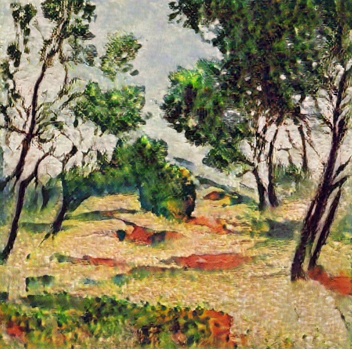
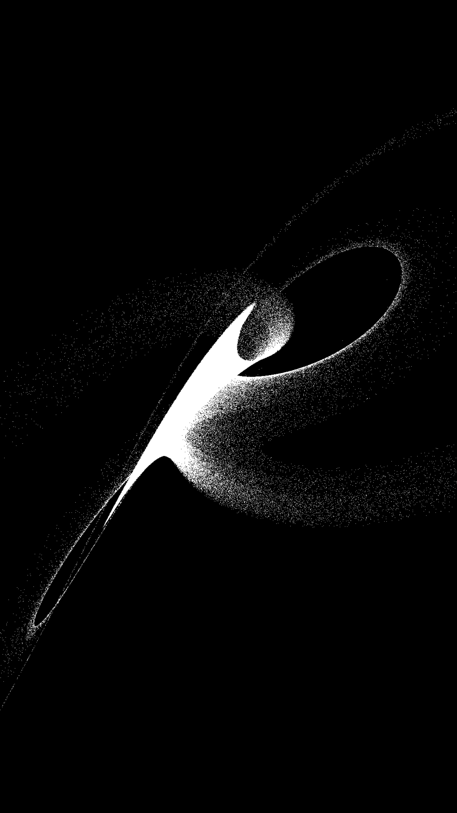
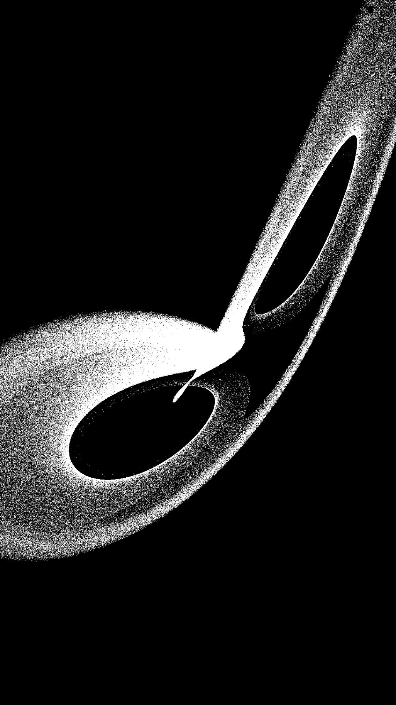
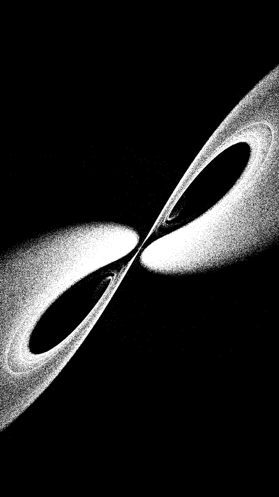
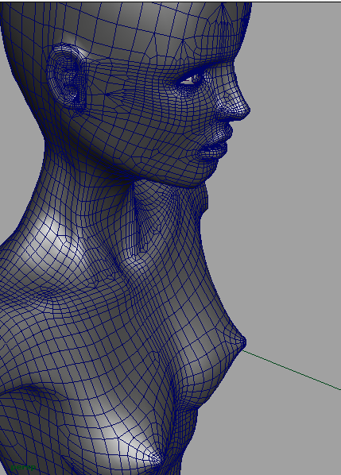
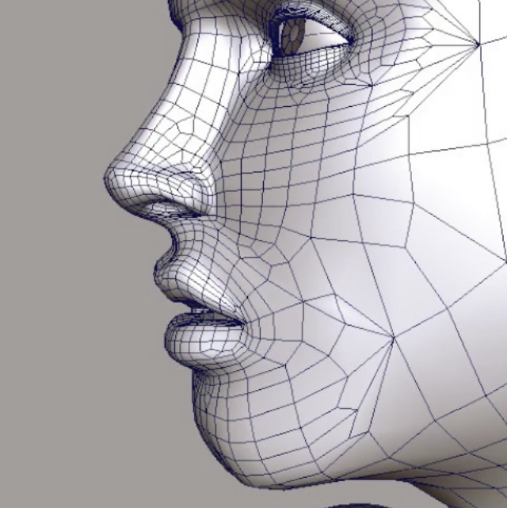

A Walk Through Latent Space



Lorenz Attractor
Fluid Simulation
The interactive fluid simulation and Lorenz Attractor above are part of a series of experiments I've been making in Apple Metal — a programming framework for low-level, real-time graphics on Apple GPUs.
At this level, you're basically writing bytes directly to the graphics card. The physics in the fluid simulation — a classic "heightfield" solver — happen in a Compute Shader, which runs on the GPU. The Lorenz Attractor simulation — based on a set of differential equations from Chaos Theory — consists of one million particles, animated in real-time, once again using Metal Compute Shaders.
I spent years making 'offline' computer graphics, in which a single image could take hours or even days to render. Working in real-time graphics shares the same underlying mathematics, but in many ways is an entirely different art. What fascinates me the most about real-time graphics is the type of human-computer interactions it affords. When you find ways to optimize graphics so that people can interact with them in real-time, a whole new world opens up — something people are discovering with the resurgence of virtual reality.
Murmuration
A flocking algorithm wherein each element attempts to align itself to every other element, steer towards the center of the flock, and avoid colliding with other elements. This is an n-body problem with exponential complexity. A parallel processing approach was adapted from an NVIDIA CUDA paper to work in the Metal Shading Language.
Isosurface
Implementation of Marching Cubes algorithm in a Metal Compute Shader. The algorithm takes a field of points — a kind of energy field (or 'Gaussian Potential Field') — and generates a polygonal surface. A chrome map approach was used to simulate reflectivity, and the n-body algorithm provides the gravitational attraction and animation.
Cellular
A 3D implementation of Cellular Automata. Similar to Conway's "Game of Life", but in three dimensions, with slightly different rules. A 3D texture defines whether a given cell is alive or dead, and a compute shader evaluates each cell at every step of the simulation. Ambient Occlusion self-shades elements closer to the center of the cube.
Lines
Music video for Henri Bergman's track "Nexus". A video stream of a dancer displaces an array of lines. Real-time audio processing of the track's frequencies influences the displacement.
Interference
Music video for Henri Bergman's track "Interference". Implementation of a Lorenz Attractor. As the simulation progresses, the points slowly transition into a moving portrait of Henri. A Metal Compute Shader evaluates the Lorenz Attractor, and a texture map of a live video stream is used to morph the particles.
Galaxies
N-body simulation wherein each particle is gravitationally attracted to each other particle. An efficient parallel processing algorithm was adapted from an NVIDIA paper into Apple's Metal Shading Language. This algorithm has been subsequently used in many of my other experiments.

Figure

Figure: Detail
I sculpted this model over several months. It began as a simple cube, which was extruded and shaped into the rough proportions of the figure. The model was then smoothed by subdividing the mesh into more contour lines, which were sculpted in finer detail. The process of sculpting, subdividing, and refining was repeated several times.